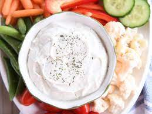

Vegetable Dip

Description
This vegetable dip was made popular by Sharon McMahon and has been lovingly termed, "Democracy Dip."
Ingredients
- 2 tablespoons grated onion
- 1/2 cup mayonnaise
- 1/2 cup sour cream or plain Greek yogurt
- 3 tablespoons fresh dill, chopped
- 2 tablespoons ranch seasoning
- 1/4 teaspoon seasoning salt
Directions
- Grate the onion using a microplane or a food processor. This is the hardest part of the entire recipe.
- Combine onion with the rest of the ingredients.
- Stir well and allow to chill.
- For large groups, consider doubling the recipe.